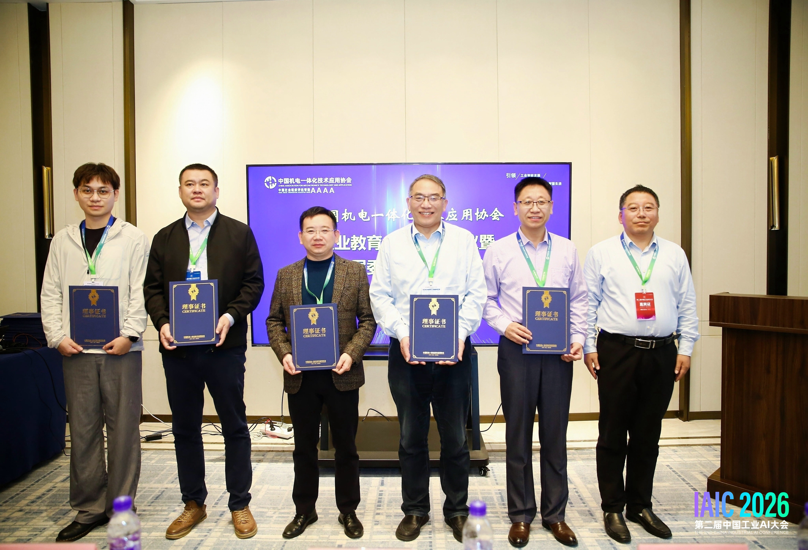

IAIC 2026 · Hangzhou, China
I attended the 2nd China Industrial AI Conference (IAIC 2026) and its AI + Education Integration Forum in Hangzhou, China. The discussions covered industrial AI, vocational education, and intelligent manufacturing. I gained useful perspectives on integrating AI into robotics teaching and strengthening collaboration between education and industry.
